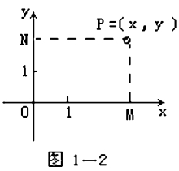
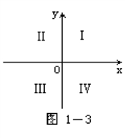
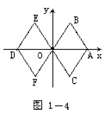
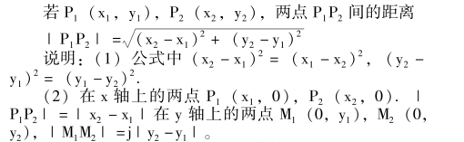
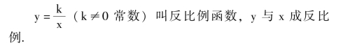
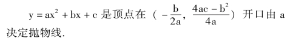
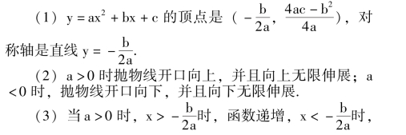
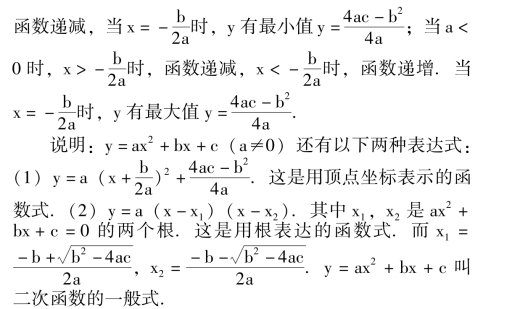
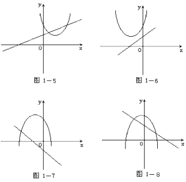
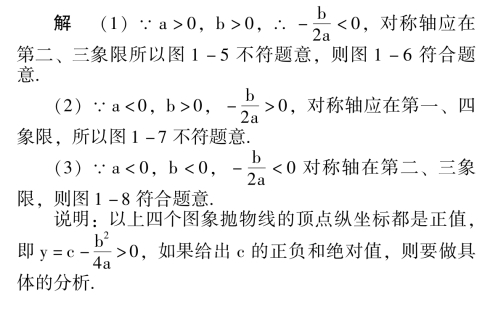

函数及其图像
【平面直角坐标系】
在平面上取定一点O，过O 作两条互相垂直的直线，以O 为公共原点，分别在两直线上建立有相同长度单位的坐标系.通常将放在水平位置的坐标轴叫做横轴或x轴，从左到右是它的正向；将放在竖直位置的坐标轴叫做纵轴或y 轴，从下到上是它的正向(如图1 －2).

对于平面上任意一点P，由点P 分别向x 轴和y 轴作垂线，得到P 点在两坐标轴上的射影M 和N，点M 在x轴上的坐标x 叫做点P 的横坐标，简称横标；点N 在y 轴上的坐标y 叫做点P 的纵坐标，简称纵标.有序实数对(x，y) 叫叫做点P 的平面直角坐标，简称坐标(图1 －2) 记作P (x，y).
【坐标平面】
平面上点的集合与有序实数对的集合{ (x、y ｜x，y∈R} 之间能建立一一对应关系.建立了这一对应关系的平面直角坐标系.所在的平面叫做直角坐标平面，简称坐标平面.
两坐标轴将坐标平面分成四个部分，每一部分叫做一个象限(如图1 －3)。它们的顺序按照点的坐标的符号规定为:

第Ⅰ象限: {P (x，y) ｜x>0，y>0}；
第Ⅱ象限: {P (x，y) ｜x<0，y>0}；
第Ⅲ象限: {P (x，y) ｜x<0，y<0}；
第Ⅳ象限；{P (x，y) ｜x>0，y<0}.
两坐标轴上的点不属于任何象限.
说明: (1) 点P (x，y) 在x 轴上的充要条件是y ＝0；点P (x，y) 在y 轴上的充要条件是x ＝0.
(2) 点P (x，y) 与Q (x′，y′) 关于x 轴对称的充要条件是x ＝x′且y ＝y′；点P (x，y) 与Q (x′，y′) 关于y 轴对称的充要条件是x ＝－x′且y ＝y′；点p (x，y)与Q (x′，y′) 关于原点对称的充要条件是x ＝－x′且－y＝－y′.
【点的坐标】
点在平面内的坐标由横坐标和纵坐标的一对有序实数组成.横坐标是点向x 轴正投影点所表示的数.纵坐标是点向y 轴正投影点所表示的数.如M 点的横坐标x0，纵坐标y0，M 的坐标写成(x0，y0).

平面上的点与它的坐标一一对应.
注意: x 轴上的点纵坐标为零，y 轴上的点横坐标为零.原点的坐标为(0，0).
【平画内两点间的距离】

(3) 如果两点所在直线平行x 轴或y 轴时，它们的纵坐标相等，或横坐标相等.即公式可变成: ｜ P1P2｜ ＝｜x2－x1｜，｜M1M2｜ ＝｜y2－y1｜.
【变量】
在某一过程中，可以取不同数值的量叫做变量.
【常量】
在某一过程中，保持同一数值的量或数，叫做常量或常数.
【函数】
在某一变化过程中，有两个变量x、y，如果对于x在某一范围内的每一个确定的值，y 都有唯一确定的值与它对应，那么y 是x 的函数.记作y ＝f (x).x 叫自变量，y 叫x 的函数，f 是对应法则.
说明: 上面的定义被称为传统定义，也叫哥西定义.实际上，函数的定义有几次抽象的过程.最早只是把x 的幂称为x 的函数；后来贝努利把函数定义为: 由变量x 和常量结合的式子叫做x 的函数；再后来欧拉把函数定义为: 表示曲线的式子叫函数；到哥西则把函数定义为: 一个解析式中，若对于x 的每一个值，y 都有完全确定的值与之对应，则称y 为x 的函数；到黎曼又把函数定义为:对于x 的每一个值，y 都有完全确定的值与之对应，而不论x 与y 之间建立的对应方式如何，则称y 为x 的函数.而现代的定义被称为维布伦定义: 集合A，B 是非空集合，且B 的每一个元素都有原象时，这样的映射f: A→B就是定义域A 到值域B 上的函数.
自变量的取值范围，即原象的集合叫函数的定义域.
【函数值】
自变量在其定义域内的一个确定的值，函数有唯一确定的值与之对应，这个对应值叫这个函数的函数值.
【值域】
函数值的集合，即象的集合叫函数的值域.
说明: (1) 求函数定义域时注意分母≠0；偶次方根的被开方数不负(大于、等于零)；真数>0；(2) 复合函数求它们各部分定义域，取公共部分.
【函数的表示法】
(1) 解析法: 用等式表示的函数关系.
①显函数: 写成y ＝f (x) 的函数.
②隐函数: 写成方程形式来表示的函数.
(2) 列表法: 用表格表示自变量与函数对应值.
(3) 图象法: 用所有的自变量和它的函数对应值做为点的坐标，描出它的图形，(这个符合函数关系的图形叫函数的图象).
注意: 要把自变量的值做为点的横坐标，对应的函数值做为点的纵坐标.
说明: (1) 函数的图象是符合函数关系的点的集合；(2) 画函数图象要在函数定义域内，设出具有代表性的值，根据对应的函数关系求出它的每一个对应值，把它们做为点的横、纵坐标，在直角坐标系中逐个画出这些点，并按顺序将它画出.这种方法叫做描点法.它的步骤可概括为①列表；②描点；③连线.
【正比例函数】
函数y ＝kx (k≠0 的常数) 叫做正比例函数.y 与x成正比例，k 为比列系数.
【正比例函数的图象】
y ＝kx 的图象是过原点O (0，0) 和(1，k) 的一条直线.
【正比例函数的性质】
(1) 当k>0 时，图象过第一、第三象限，它是增函数；
(2) 当k<0 时，图象过第二、第四象限，它是减函数.
【反比例函数】

【反比例函数的图象】
由两条逐渐趋近于坐标轴的双曲线组成.
【反比例函数的性质】
(1) 当k >0 时，函数图象的两个分支分别位于第一、第三象限内，在每个象限内都是减函数，
(2) 当k <0 时，函数图象的两个分支分别在第二、第四象限内，在每一个象限内都是增函数；
(3) 两个分支以x 轴，y 轴为渐近线，但永远不能与坐标轴相交.
【一次函数】
y ＝kx ＋b (k≠0，k、b 都是常数) 叫做x 的一次函数。
说明: 函数解析式中自变量所组成的代数式为整式时，以自变量的指数来定义函数的次数，一次函数就是自变量是一次的整式函数.
【一次函数的图象】
是过(0，b) 且平行于y ＝kx 的一条直线.b 叫直线y ＝kx ＋b 在y 轴上的截矩.b>0 截在y 轴的正半轴上；b＝0 时，直线过原点，成为y ＝kx (正比例函数)；b <0时，截在y 轴的负半轴上.
说明: y ＝kx 是y ＝kx ＋b 的特例.
【一次函数的性质】
y ＝kx ＋b 当k>0 时是增函数；当k<0 时为减函数.
【二次函数】
y ＝ax2＋bx ＋c (a≠0 且a、b、c 都是常数) 叫x 的二次函数.
【二次函数的图象】

说明: 抛物线是以过顶点与坐标轴(一般是y 轴)平行的直线为对称轴的对称图形.
【二次函数的性质】


例 已知y ＝ax2＋bx ＋c 和y ＝ax ＋b，它们的图象画在同一坐标系，大致如下列哪一个.

